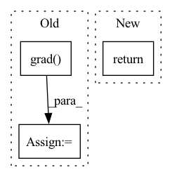

Pattern ID :25399
Before Change
if not x2.requires_grad:
x2.requires_grad = True
y1, y2 = ctx.function(x1, x2, mask)
grad = torch.autograd.grad(outputs=(y1, y2), inputs=(x1, x2), grad_outputs=grad_outputs)
return (None, *grad, None)
After Change
Reversible.outputs = (x1, x2.detach())
return (None, x1_grad, x2_grad, None)
In pattern: SUPERPATTERN
Frequency: 3
Non-data size: 3
Instances Fragment ID: 77621794
Project Name: rick-mccoy/reformer-pytorch
Commit Name: ba4ca176c189afc7a5ab76d9aea596478ea128a8
Time: 2020-01-15
Author: rickmccoy3141@gmail.com
File Name: model/reversible.py
M Class Name: Reversible
N Class Name: Reversible
M Method Name: backward(1)
N Method Name: backward(1)
M Parent Class: Function
N Parent Class: Function
M File Name: model/reversible.py
N File Name: model/reversible.py
M Start Line: 26
M End Line: 36
N Start Line: 24
N End Line: 49
Before Change
"""
input = input.detach().requires_grad_(True)
output = self.model(input)
gradient, = torch.autograd.grad( (output,), (input,), grad_outputs=(attr_output_fn(output.detach()),))
return output, gradient
class SmoothGrad(Attributor):After Change
"""
// create a view of input in case it does not already requires grad
input = input.view_as(input)
return self.grad(input, attr_output_fn)
class SmoothGrad(Gradient): Fragment ID: 77621801
Project Name: chr5tphr/zennit
Commit Name: 8a94236e24ffcb390e2d5a6b550d993cf6633ae4
Time: 2022-09-29
Author: chrstphr@posteo.eu
File Name: src/zennit/attribution.py
M Class Name: Gradient
N Class Name: Gradient
M Method Name: forward(3)
N Method Name: forward(3)
M Parent Class: Attributor
N Parent Class: Attributor
M File Name: src/zennit/attribution.py
N File Name: src/zennit/attribution.py
M Start Line: 224
M End Line: 227
N Start Line: 285
N End Line: 286
Before Change
f_grad = f_gradStruct()
f_grad.u = autograd.grad( f,f)
// // absolute value
// if u >= 0:
// f_grad.u = 1
// else:After Change
ce = None
ce_grad = None
return [f,ci,ci_grad,ce,ce_grad]
// return [f,ci,ce] Fragment ID: 77621803
Project Name: sun-umn/pygranso
Commit Name: 0d208adde71a70226c1176ae83563c442c16967f
Time: 2021-07-19
Author: liang664@umn.edu
File Name: Python_version/examples/autodiff_ex6/combinedFunction.py
M Class Name: AnonimousClass
N Class Name: AnonimousClass
M Method Name: combinedFunction(1)
N Method Name: combinedFunction(1)
M Parent Class:
N Parent Class:
M File Name: Python_version/examples/autodiff_ex6/combinedFunction.py
N File Name: Python_version/examples/autodiff_ex6/combinedFunction.py
M Start Line: 22
M End Line: 50
N Start Line: 22
N End Line: 54